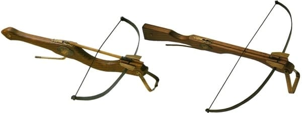
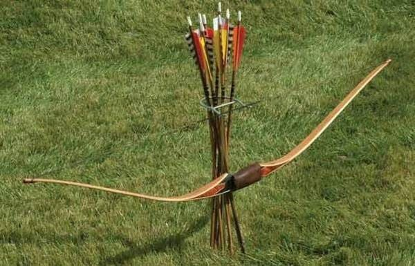
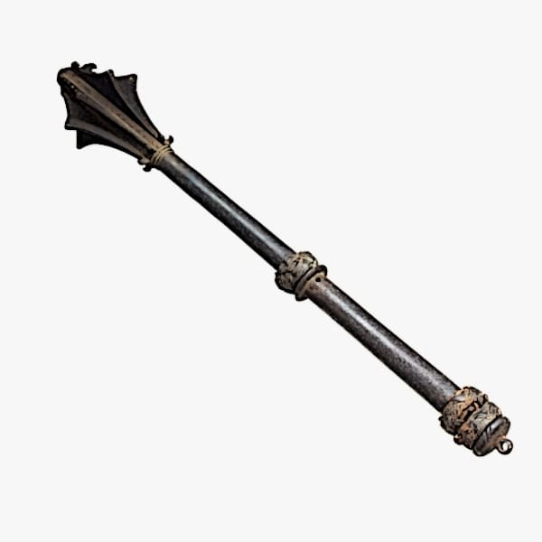
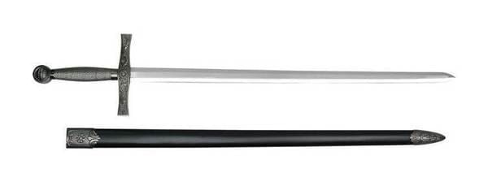
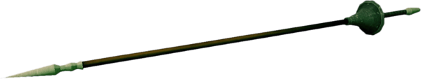
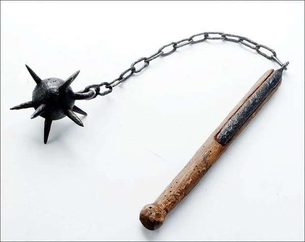

| Nombre |
Modo de uso |
Imagen |
| Ballesta |
Una ballesta es un arco montado sobre una base recta e inmóvil que sirve para disparar proyectiles que reciben el nombre de saetas, virotes o pernos. |
 |
| Arco |
El arco consiste en un arma flexible en cuyos extremos se atan a su vez los extremos de una cuerda en la que se sitúa la flecha. Tirando de ella, el arco se flexiona y al soltar, la fuerza que se genera lanza la flecha. |
 |
| Maza |
Una maza es simplemente una vara o garrote en cuyo extremo se engastaba una piedra con la que se golpeaba al enemigo. Con el paso del tiempo, esta piedra se sustituyó por una bola fabricada en metal a la que posteriormente se añadieron aletas. |
 |
| Espada |
La espada es un arma blanca que consiste en una hoja recta y punzante de dos filos sujeta a una empuñadura y que puede presentar variaciones en cuanto a longitud, peso, empuñadura, etcétera.. |
 |
| Lanza |
La lanza es un arma de asta fabricada en madera o metal que tiene en uno de sus extremos una punta afilada cuyo material y forma ha ido cambiando a lo largo del tiempo. |
 |
| Mangual |
El mangual también se conoce con el nombre de maza de cadena o látigo de armas. Se trata de una vara de madera unida a una cadena en cuyo extremo se encuentra una cabeza de metal con pinchos. Se usó durante la Edad Media como arma especializada contra armaduras de placas y escudos. Era un arma para golpear y su manejo requería mucho entrenamiento ya que había muchas posibilidades de salir herido. Además, se necesitaba tener cierto espacio alrededor para poder usarlo adecuadamente. |
 |